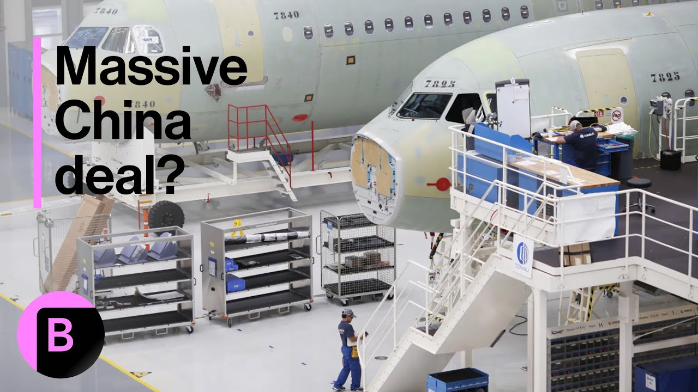

【中国考虑与空客达成巨额飞机订单，波音或受打击】
Summary: China's strong demand for Airbus aircraft is currently overshadowing Boeing due to political tensions with the U.S. A potential deal for 250-500 planes could solidify Airbus's dominant market share in China, while geopolitical factors influence these large-scale purchases as diplomatic tools.
摘要： 中国对空客飞机的强劲需求目前因与美国的政治紧张关系而压倒波音。一笔250-500架飞机的潜在交易可能巩固空客在中国的主导市场份额，而地缘政治因素将这些大规模采购变为外交工具。

⏱️ Estimated Reading Time: 6 min
📚 高考3500生词 📚 雅思生词 📚 托福生词 📚 GRE生词 📚 UP主自用生词
What do we know about the extent of Chinese appetite for Airbus aircraft?
我们对中国对空客飞机的需求程度了解多少？
And good morning, Betty.
早上好，贝蒂。
Good morning from Berlin.
早上好，这里是柏林。
So yeah, there's generally a big appetite from China for aircraft, both Boeing and Airbus.
是的，中国对飞机一直有巨大需求，包括波音和空客。
But the problem is that right now China is not Boeing not buying Boeing aircraft because of the political spat that's going on between Washington and Beijing.
但问题是，由于华盛顿和北京之间的政治争端，中国目前没有购买波音飞机。
So Airbus is really the player in town.
因此空客成了唯一的选择。
And what we're hearing this is, according to people that we spoke with, is that there could be a big deal unfolding next week.
根据我们交谈的消息人士，我们听说下周可能达成一项大交易。
The way China buys its aircraft is a little different to most other countries where, you know, a single airline will negotiate with a plane maker.
中国购买飞机的方式与其他国家不同，通常由单个航空公司与飞机制造商谈判。
China does this centrally.
中国采取集中采购方式。
They have sort of a central umbrella organization that then distributes the aircraft among its main airlines.
他们有一个中央协调机构，再将飞机分配给主要航空公司。
So that's why you sometimes get these huge numbers out of China.
这就是为什么中国有时会传出巨额订单。
So we are hearing somewhere between 250 and maybe even as high as 500 aircraft.
我们听说数量可能在250架甚至高达500架。
Obviously not all in one fell swoop in terms of deliveries that would unfold over years.
显然不会一次性交付，而是分多年完成。
But it be a huge bonus for Airbus.
但这将对空客是巨大利好。
It would really help them cement their market share in China, which is already close to 50%, and that would take them above that.
这将帮助巩固其在中国接近50%的市场份额，并进一步扩大优势。
So really an important win for Airbus if it does unfold.
如果成真，这将是空客的重要胜利。
So how does a deal like this reshape the battle between Airbus and Boeing then?
那么这样的交易将如何改变空客与波音的竞争格局？
Well, we saw a couple of weeks ago when Donald Trump went to the Middle East that day, but that region bought a lot of Boeing aircraft.
几周前特朗普访问中东时，该地区购买了大量波音飞机。
And that gives you a sense that aircraft purchases these large orders, particularly when there's a government involved, tend to turn into a bit of a diplomatic tool.
这说明大宗飞机采购，尤其有政府参与时，往往会变成外交工具。
So Trump managed to bring in a big business for Boeing, and now we think the same might happen when French President Emmanuel Macron and the German chancellor Friedrich mounts go to Beijing next month.
特朗普为波音带来了大生意，而我们认为下月法国总统马克龙和德国总理访华时可能重演。
So there's always this sort of political component behind it.
因此背后总有政治因素。
Both sides, the Europeans, but also the Americans trying to strengthen their national champions.
欧美双方都试图扶持本国龙头企业。
And that really is sort of what the duopoly is about.
这正是双头垄断的本质。
You still have only those two plane makers to choose from.
目前仍只有这两家飞机制造商可选。
China is trying to build its own aviation industry, its own rival, to the 737 Boeing plane and the A320 Airbus.
中国正试图建立自己的航空工业，打造与波音737和空客A320竞争的机型。
But so far that remains a local and at best regional phenomenon.
但目前为止仍局限于本地，最多是区域性现象。
But it's something that they have to watch Airbus and Boeing, if they want to maintain a foothold in this crucial market that is China.
但空客和波音若想在中国这个关键市场保持立足点，就必须警惕这一点。
Hmm.
嗯。
And you've noted this already any bit.
你已经提到了一点。
The diplomacy always when it comes to aviation orders.
航空订单总是涉及外交。
And is this a way for President Xi to send a message to President Trump?
这是习近平主席向特朗普总统传递信号的方式吗？
President Trump wants a meeting.
特朗普总统希望会晤。
Xi seeming a little more elusive and not quite so keen to have that phone call.
习主席显得更难以捉摸，不太愿意通电话。
And here we've got a trade deal in the works surrounding European aircraft.
而现在我们看到了围绕欧洲飞机的贸易协议正在酝酿。
Yes, you're absolutely right.
是的，你说得完全正确。
I mean, that sends a very clear signal that right now China remains open to business, but just not to the U.S.
这发出了明确信号：中国仍对商业开放，只是不对美国。
And we had that the message from Trump this morning saying that he remains a very difficult customer to work with.
今早特朗普还表示自己是个难打交道的客户。
He wants a deal, but he's proving elusive.
他想要协议，但表现得很捉摸不定。
So and we also know that China has essentially stopped taking deliveries of Boeing aircraft.
我们还知道中国基本已停止接收波音飞机。
So while they have planes on order right now, that entire business for Boeing is on ice.
虽然现有订单仍在，但波音的整个业务已被冻结。
And this is a key market.
而这是关键市场。
Yes.
是的。
Around markets like India, yes, there is global demand for aircraft.
印度等市场确实存在全球飞机需求。
But you can't if you're Boeing, you can't just sort of ignore the Chinese market.
但作为波音，你不能忽视中国市场。
So hopefully over time, they will get back into that market.
希望随着时间推移，他们能重返该市场。
The question is, will Airbus, by that time, by the time that Boeing comes back, will they have strengthened their position to a point where it's going to be very difficult for Boeing to really see eye to eye with a key rival?
问题是，等到波音回归时，空客是否已巩固到让波音难以与这个关键对手平起平坐？